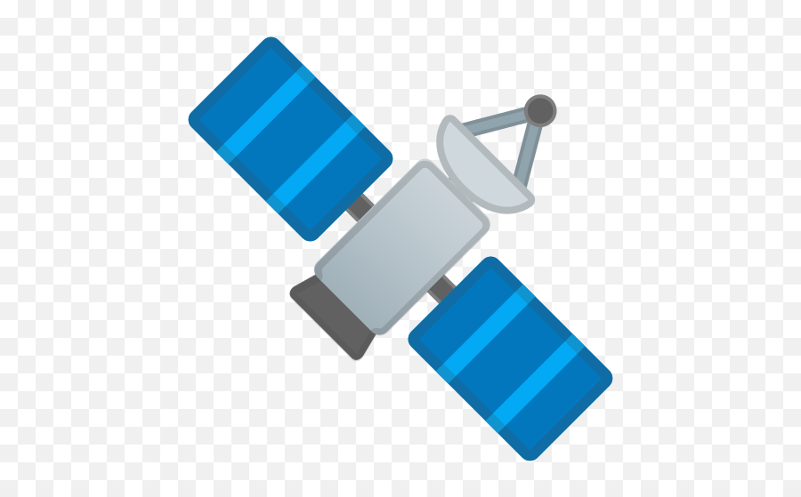

My Projects
A collection of projects I've worked on during my academic journey.
| Preview | Project Name | Description | Technologies | Status |
|---|---|---|---|---|
 |
Basic Tetris Game | A classic Tetris game developed using Python. It includes basic Tetris game mechanics. Watch the explanation: YouTube Video | Python | Completed |
 |
Sağmalcılar District Coordinate Improvement | Coordinate improvement was carried out in the Sağmalcılar district of Istanbul province using Netcad software and information obtained from cadastral documents. | Netcad, Cadastral Analysis | Completed |
|  | Road Extraction from Satellite Imagery | An ongoing project focused on extracting road networks from satellite images using image processing and machine learning techniques. | Python, OpenCV, Deep Learning | Ongoing |